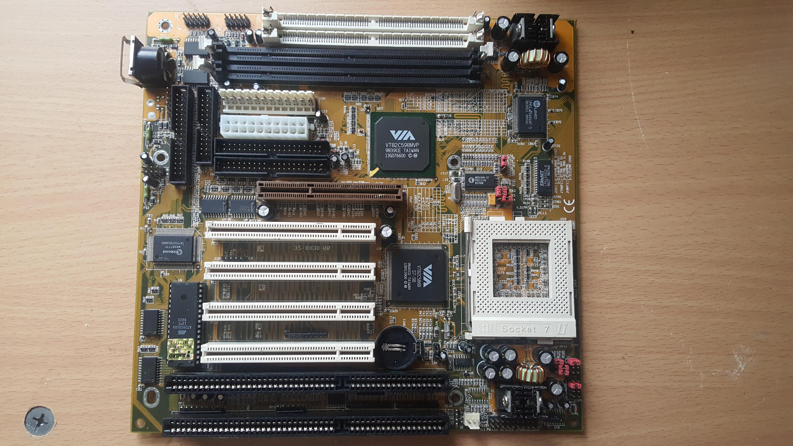

Análisis de Hardware: Evolución de la Tarjeta Madre
1. Tarjeta Madre Vintage (Era Pentium/K6)

2. Tarjeta Madre de Vanguardia (MSI X870E - 2026)

Pasa el ratón sobre un componente para conocer su función
